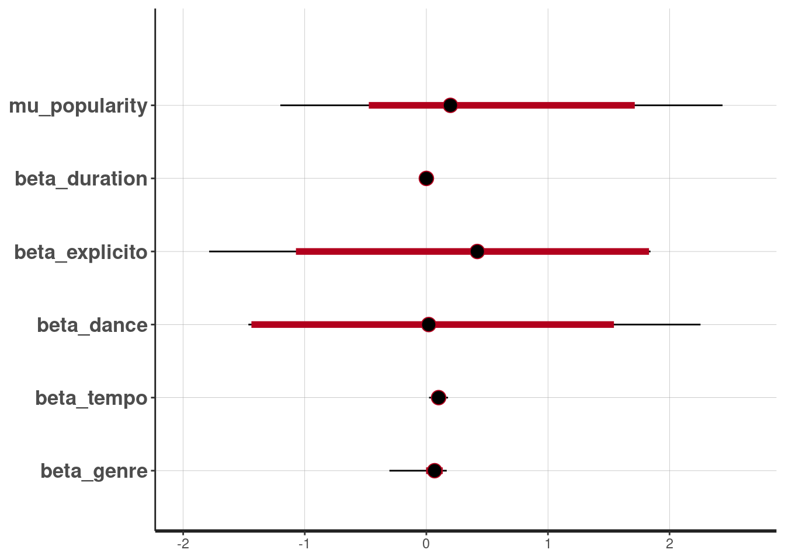
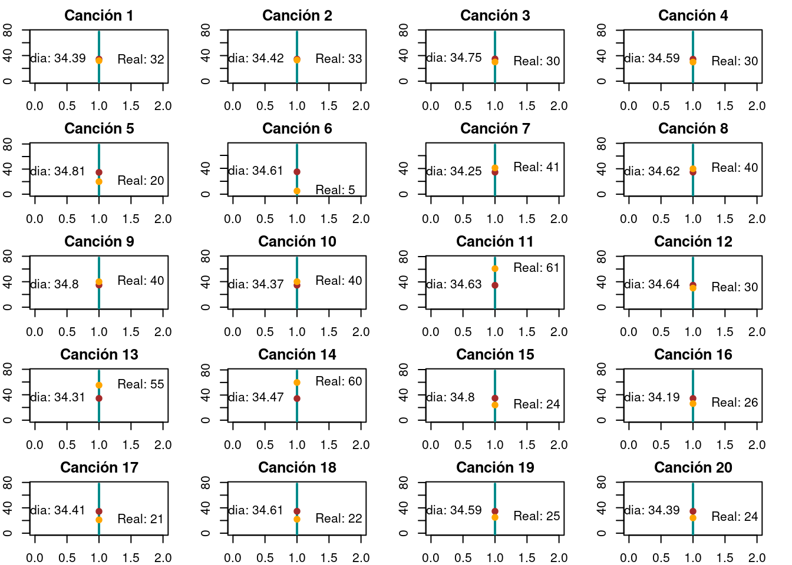
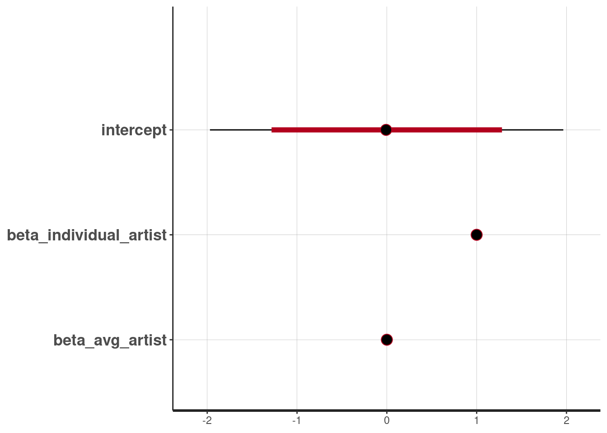

library(rstan)
library(ggplot2)
library(gridExtra)
library(tidyverse)
library(cmdstanr)
library(rsample)Análisis de popularidad de canciones en el servicio de streamig Spotify
Análisis de popularidad de canciones en spotify
Introducción
De acuerdo con wikipedia, en la plataforma de Spotify se tiene acceso a más de 100 millones de canciones. Algunas canciones son más populares que otras. Si definimos a la variable ùëå como un rating de popularidad con ùëå ‚àà [0, 100]. En general, entre más reproducciones recientes tenga una una canci√≥n, su rating de popularidad será mayor.
Sabemos que la popularidad de una canción, no siempre es reflejo de su calidad, popularidad a largo plazo, o popularidad afuera de la audiencia de Spotify. Además del artista hay otras características que hacen popular a una canción, como la “valencia”, que define que tan alegre suena una pieza.
Para el proyecto nos enfocaremos en entender:
Falta mencionar el modelo lineal y modelo lineal con prioris informativas * ¿Cuál es la popularidad típica de una canción en Spotify? * ¿Hasta donde influye el artista en la popularidad de la canción? * Para un sólo artista, ¿cómo varía la popularidad de sus canciones? * ¿Cómo influye la valencia en la popularidad de una canción?
Métodos:
Para nuestro proyecto planeamos hacer tres tipos de modelos:
- Modelo con parámetros homogéneos: Modelar la popularidad de las canciones sin tomar en cuenta el artista.
- Modelo con parámetros heterogéneos: Modelar la popularidad de las canciones tomando en cuenta a los artistas que las interpretan.
- Modelo Jerárquico: Una alternativa intermedia donde permitimos que la distribución inicial sobre la popularidad pueda adaptarse a los datos. Y comparar sus distribuciones predictivas con los datos observados, para ver cuál modela mejor y porqué.
- Modelo Jerarquico con DAG: Haremos un DAG para agregar al modelo jerárquico la variable de valencia.
Las librerías que utilizamos son las soguientes:
Datos
[una descripción de los datos que se usan para el modelo, ya sean datos observados o simulados y el contexto en el que se utilizan.]
Observamos la estructura de los datos
datos <- read.csv("datos/datos.csv")
datos <- as.data.frame(datos)
selected_datos_small <- read.csv("datos/datos_small.csv")
selected_datos <- read.csv("datos/selected_datos.csv")
glimpse(datos)Rows: 114,000
Columns: 21
$ id <int> 0, 1, 2, 3, 4, 5, 6, 7, 8, 9, 10, 11, 12, 13, 14, 15,…
$ track_id <chr> "5SuOikwiRyPMVoIQDJUgSV", "4qPNDBW1i3p13qLCt0Ki3A", "…
$ artists <chr> "Gen Hoshino", "Ben Woodward", "Ingrid Michaelson;ZAY…
$ album_name <chr> "Comedy", "Ghost (Acoustic)", "To Begin Again", "Craz…
$ track_name <chr> "Comedy", "Ghost - Acoustic", "To Begin Again", "Can'…
$ popularity <int> 73, 55, 57, 71, 82, 58, 74, 80, 74, 56, 74, 69, 52, 6…
$ duration_ms <int> 230666, 149610, 210826, 201933, 198853, 214240, 22940…
$ explicit <chr> "False", "False", "False", "False", "False", "False",…
$ danceability <dbl> 0.676, 0.420, 0.438, 0.266, 0.618, 0.688, 0.407, 0.70…
$ energy <dbl> 0.4610, 0.1660, 0.3590, 0.0596, 0.4430, 0.4810, 0.147…
$ key <int> 1, 1, 0, 0, 2, 6, 2, 11, 0, 1, 8, 4, 7, 3, 2, 4, 2, 1…
$ loudness <dbl> -6.746, -17.235, -9.734, -18.515, -9.681, -8.807, -8.…
$ mode <int> 0, 1, 1, 1, 1, 1, 1, 1, 1, 1, 1, 1, 0, 1, 1, 1, 1, 0,…
$ speechiness <dbl> 0.1430, 0.0763, 0.0557, 0.0363, 0.0526, 0.1050, 0.035…
$ acousticness <dbl> 0.0322, 0.9240, 0.2100, 0.9050, 0.4690, 0.2890, 0.857…
$ instrumentalness <dbl> 1.01e-06, 5.56e-06, 0.00e+00, 7.07e-05, 0.00e+00, 0.0…
$ liveness <dbl> 0.3580, 0.1010, 0.1170, 0.1320, 0.0829, 0.1890, 0.091…
$ valence <dbl> 0.7150, 0.2670, 0.1200, 0.1430, 0.1670, 0.6660, 0.076…
$ tempo <dbl> 87.917, 77.489, 76.332, 181.740, 119.949, 98.017, 141…
$ time_signature <int> 4, 4, 4, 3, 4, 4, 3, 4, 4, 4, 4, 3, 4, 4, 4, 3, 4, 4,…
$ track_genre <chr> "acoustic", "acoustic", "acoustic", "acoustic", "acou…Contamos con 114000 registros de canciones y 21 características que los representan. Sin embargo vamos a ocupar sólo una muestra de 57,000 canciones. En el Anexo 1 de este trabajo se encuentra la limpieza y adecuación de datos para su uso en la modelación de la popularidad de las canciones.
datos <- read.csv("datos/muestra.csv") Obtenemos un resumen de los datos y sus variables
print(summary(datos)) artists_numeric id track_id artists
Min. : 1 Min. : 0 Length:57000 Length:57000
1st Qu.: 5327 1st Qu.: 28317 Class :character Class :character
Median :10477 Median : 56956 Mode :character Mode :character
Mean :10564 Mean : 57037
3rd Qu.:15830 3rd Qu.: 85600
Max. :21163 Max. :113997
album_name track_name popularity duration_ms
Length:57000 Length:57000 Min. : 0.00 Min. : 8586
Class :character Class :character 1st Qu.: 17.00 1st Qu.: 174002
Mode :character Mode :character Median : 34.00 Median : 212924
Mean : 33.15 Mean : 228168
3rd Qu.: 50.00 3rd Qu.: 261096
Max. :100.00 Max. :5237295
explicit danceability energy key
Min. :0.00000 Min. :0.0000 Min. :0.0000 Min. : 0.000
1st Qu.:0.00000 1st Qu.:0.4560 1st Qu.:0.4730 1st Qu.: 2.000
Median :0.00000 Median :0.5800 Median :0.6830 Median : 5.000
Mean :0.08574 Mean :0.5665 Mean :0.6409 Mean : 5.307
3rd Qu.:0.00000 3rd Qu.:0.6950 3rd Qu.:0.8530 3rd Qu.: 8.000
Max. :1.00000 Max. :0.9850 Max. :1.0000 Max. :11.000
loudness mode speechiness acousticness
Min. :-46.591 Min. :0.0000 Min. :0.00000 Min. :0.0000
1st Qu.:-10.015 1st Qu.:0.0000 1st Qu.:0.03590 1st Qu.:0.0170
Median : -7.002 Median :1.0000 Median :0.04880 Median :0.1680
Mean : -8.269 Mean :0.6374 Mean :0.08462 Mean :0.3152
3rd Qu.: -5.013 3rd Qu.:1.0000 3rd Qu.:0.08410 3rd Qu.:0.5990
Max. : 3.156 Max. :1.0000 Max. :0.96300 Max. :0.9960
instrumentalness liveness valence tempo
Min. :0.0000000 Min. :0.0000 Min. :0.000 Min. : 0.00
1st Qu.:0.0000000 1st Qu.:0.0979 1st Qu.:0.258 1st Qu.: 99.45
Median :0.0000406 Median :0.1320 Median :0.464 Median :122.04
Mean :0.1557287 Mean :0.2137 Mean :0.474 Mean :122.16
3rd Qu.:0.0483250 3rd Qu.:0.2720 3rd Qu.:0.683 3rd Qu.:140.07
Max. :1.0000000 Max. :1.0000 Max. :0.995 Max. :220.53
time_signature track_genre genre_factor genre_numeric
Min. :0.000 Length:57000 Length:57000 Min. : 1.00
1st Qu.:4.000 Class :character Class :character 1st Qu.: 29.00
Median :4.000 Mode :character Mode :character Median : 58.00
Mean :3.902 Mean : 57.54
3rd Qu.:4.000 3rd Qu.: 86.00
Max. :5.000 Max. :114.00
artists_factor popularity_artist
Length:57000 Min. : 0.00
Class :character 1st Qu.: 19.31
Mode :character Median : 33.16
Mean : 33.15
3rd Qu.: 47.00
Max. :100.00 Métodos
Modelo lineal
Generamos un modelo lineal con priors poco informativas.
El modelo lineal simple lo expresamos como:
\(y_i=\beta_0 + \beta_1 * x_i + \sigma_i​\)
Donde:
\(y_i\)​ es la popularidad de la observación i. \(x_i\)​ es la variable predictora (por ejemplo, duración de la canción) para la observación i. \(\beta_0\)​ y \(\beta_1\)​ son los coeficientes del modelo. \(\sigma_i\)​ es el error aleatorio asociado con la observación i, que asumiremos normalmente distribuido con media cero y varianza constante.
ojo se mencionan dos betas pero son 5 betas en el modelo
stan_code_lineal <- "
data {
int<lower=0> N;
int<lower=0, upper=100> popularity[N];
real<lower=0> duration[N];
int<lower=0, upper=1> explicito[N];
real<lower=0, upper=1> dance[N];
real<lower=0, upper=244> tempo[N];
int<lower=1, upper=114> genre[N];
}
parameters {
real mu_popularity;
real<lower=0> sigma_popularity;
real beta_duration;
real beta_explicito;
real beta_dance;
real beta_tempo;
real beta_genre;
}
model {
// Priors
mu_popularity ~ normal(0,1);
sigma_popularity ~ normal(0,1);
beta_duration ~ normal(0,1);
beta_explicito ~ normal(0,1);
beta_dance ~ normal(0,1);
beta_tempo ~ normal(0,1);
beta_genre ~ normal(0,1);
// Likelihood
for (i in 1:N) {
popularity[i] ~ normal(mu_popularity +
beta_duration * duration[i] +
beta_explicito * explicito[i] +
beta_dance * dance[i] +
beta_tempo * tempo[i] +
beta_genre * genre[i]
, sigma_popularity);
}
}
"
# Compilar el modelo
stan_model_lineal <- stan_model(model_code = stan_code_lineal)# Ajustar el modelo a los datos
fit_lineal <- sampling(stan_model_lineal,
data = list(N = nrow(selected_datos_small),
popularity = selected_datos_small$popularity,
duration = selected_datos_small$duration_ms,
explicito = selected_datos_small$explicit,
dance = selected_datos_small$danceability,
tempo = selected_datos_small$tempo,
genre = selected_datos_small$genre_numeric),
iter=10000, warmup=3000, seed=123)Warning: There were 23854 transitions after warmup that exceeded the maximum treedepth. Increase max_treedepth above 10. See
https://mc-stan.org/misc/warnings.html#maximum-treedepth-exceededWarning: There were 1 chains where the estimated Bayesian Fraction of Missing Information was low. See
https://mc-stan.org/misc/warnings.html#bfmi-lowWarning: Examine the pairs() plot to diagnose sampling problemsWarning: The largest R-hat is 1.36, indicating chains have not mixed.
Running the chains for more iterations may help. See
https://mc-stan.org/misc/warnings.html#r-hatWarning: Bulk Effective Samples Size (ESS) is too low, indicating posterior means and medians may be unreliable.
Running the chains for more iterations may help. See
https://mc-stan.org/misc/warnings.html#bulk-essWarning: Tail Effective Samples Size (ESS) is too low, indicating posterior variances and tail quantiles may be unreliable.
Running the chains for more iterations may help. See
https://mc-stan.org/misc/warnings.html#tail-ess# Ver resultados
print(fit_lineal)Inference for Stan model: anon_model.
4 chains, each with iter=10000; warmup=3000; thin=1;
post-warmup draws per chain=7000, total post-warmup draws=28000.
mean se_mean sd 2.5% 25% 50% 75%
mu_popularity 0.36 0.32 0.97 -1.20 -0.41 0.20 1.04
sigma_popularity 9.98 0.09 1.22 9.00 9.59 9.90 10.23
beta_duration 0.00 0.00 0.00 0.00 0.00 0.00 0.00
beta_explicito 0.46 0.58 1.16 -1.79 -0.41 0.42 1.81
beta_dance -0.03 0.61 1.18 -1.46 -1.42 0.02 0.88
beta_tempo 0.08 0.02 0.20 0.02 0.08 0.10 0.12
beta_genre 0.04 0.03 0.19 -0.30 0.03 0.07 0.10
lp__ -726.42 617.25 10499.90 -266.78 -238.75 -237.10 -235.54
97.5% n_eff Rhat
mu_popularity 2.44 9 1.15
sigma_popularity 11.03 183 1.02
beta_duration 0.00 42 1.06
beta_explicito 1.84 4 1.41
beta_dance 2.25 4 1.42
beta_tempo 0.18 86 1.04
beta_genre 0.17 35 1.09
lp__ -233.99 289 1.01
Samples were drawn using NUTS(diag_e) at Fri May 10 20:16:52 2024.
For each parameter, n_eff is a crude measure of effective sample size,
and Rhat is the potential scale reduction factor on split chains (at
convergence, Rhat=1).Observamos intervalos de credibilidad
extract_lineal <- rstan::extract(fit_lineal, permuted = TRUE)
stan_plot(fit_lineal, prob = 0.95)ci_level: 0.8 (80% intervals)outer_level: 0.95 (95% intervals)
Podemos ver tambien, al observar los coeficientes, que el género y el grado de “daceability” tienen una mayor influencia sobre la popularidad de una canción.
Modelo lineal con prioris informativas
Modelamos la opularidad en base a las siguientes características:
- Duración: duration_ms
- ¿Es explicita?: explicit
- ¿Que tan bailable?: danceability
- Tempo: tempo
- Genero: track_genre
Proponemos como distribuciones iniciales las siguientes:
Popularidad:
Es nuestra variable objetivo y debido a que la popularidad es un valor discreto entre 0 y 100, elegimos una distribución Binomial Negativa la cual permitirá modelar la sobredispersión, pues esperamos que la popularidad tenga una amplia variabilidad.
En este caso, consideramos la popularidad como el resultado de un proceso de “éxito”, es decir, la canción es escuchada o marcada como favorita por un usuario hasta que se alcanza un número fijo de “éxitos” ( cierto nivel de popularidad).
- popularidad ~ N(\(\mu\),\(\phi\))
Duración:
Sabemos que la duración de las canciones debe ser mayor a cero y tiene una media aproximada de 3 minutos, por lo que usaremos una distribución exponencial.
- duración ~ Exp(\(\lambda\)) ; \(\lambda\) = 1/180000 (se encuentra en milisegundos)
Explicita:
La bariable “explicita” es una variable que tomará los valores 0 y 1. Usaremos entonces una distribución Beta para modelarla.
- explicita ~ Beta(\(\rho\))
Bailable:
Ya que los valores que toma esta variable se encuentran entre 0 y 1, utilizaremos uns distribución Beta.
- bailable ~ Beta(\(\alpha\),\(\beta\))
Tempo:
Variable continua entre 0 y 244. Utilizaremos una distribución normal truncada
- tempo ~ N+(\(\mu\),\(\sigma\))
Genero:
El genero es una variable entera, por lo que la modelaremos usando una distribución Multinomial.
- genero ~ Multinomial(n,p)
Utilizaremos un modelo lineal generalizado (GLM) donde la popularidad sea una función lineal de las demás variables, teniendo en cuenta la naturaleza discreta de la popularidad (valores enteros entre 0 y 100).
stan_code <- "
data {
int<lower=0> N;
int<lower=0, upper=100> popularity[N];
real<lower=0> duration_ms[N];
int<lower=0, upper=1> explicito[N];
real<lower=0, upper=1> danceability[N];
real<lower=0, upper=244> tempo[N];
real<lower=1, upper=114> genre[N];
}
parameters {
real phi_popularity;
real<lower=0> p_duration;
real<lower=0, upper=1> p_explicit;
real<lower=0, upper=1> p_dance;
real<lower=0> mu_tempo;
real<lower=0> sigma_tempo;
real<lower=0> mu_genre;
real<lower=0> sigma_genre;
real<lower=0> p_tempo;
real<lower=0> p_genre;
}
model {
// Priors
phi_popularity ~ normal(0, 1);
p_duration ~ exponential(180000);
p_explicit ~ beta(2,2);
p_dance ~ beta(1, 1);
mu_tempo ~ normal(120, 30);
sigma_tempo ~ cauchy(0, 5);
mu_genre ~ normal(120, 30);
sigma_genre ~ cauchy(0, 5);
p_tempo ~ normal(mu_tempo, sigma_tempo);
p_genre ~ normal(mu_genre, sigma_genre);
// Likelihood
for (i in 1:N) {
real mu_popularity;
mu_popularity = p_duration * duration_ms[i] +
p_explicit * explicito[i] +
p_dance * danceability[i] +
p_tempo * tempo[i] +
p_genre * genre[i];
popularity[i] ~ neg_binomial_2(mu_popularity, phi_popularity); // Distribución binomial negativa para popularidad
}
}
"
# Compilar el modelo
stan_model <- stan_model(model_code = stan_code)Trying to compile a simple C fileRunning /usr/lib/R/bin/R CMD SHLIB foo.c
using C compiler: ‘gcc (Ubuntu 11.4.0-1ubuntu1~22.04) 11.4.0’
gcc -I"/usr/share/R/include" -DNDEBUG -I"/home/saraluz/.cache/R/renv/cache/v5/R-4.3/x86_64-pc-linux-gnu/Rcpp/1.0.12/5ea2700d21e038ace58269ecdbeb9ec0/Rcpp/include/" -I"/home/saraluz/Documents/2Sem/MLG/Tareas/renv/library/R-4.3/x86_64-pc-linux-gnu/RcppEigen/include/" -I"/home/saraluz/Documents/2Sem/MLG/Tareas/renv/library/R-4.3/x86_64-pc-linux-gnu/RcppEigen/include/unsupported" -I"/home/saraluz/Documents/2Sem/MLG/Tareas/renv/library/R-4.3/x86_64-pc-linux-gnu/BH/include" -I"/home/saraluz/.cache/R/renv/cache/v5/R-4.3/x86_64-pc-linux-gnu/StanHeaders/2.32.5/b8d6850ef3e330bc108e712679e79443/StanHeaders/include/src/" -I"/home/saraluz/.cache/R/renv/cache/v5/R-4.3/x86_64-pc-linux-gnu/StanHeaders/2.32.5/b8d6850ef3e330bc108e712679e79443/StanHeaders/include/" -I"/home/saraluz/.cache/R/renv/cache/v5/R-4.3/x86_64-pc-linux-gnu/RcppParallel/5.1.7/a45594a00f5dbb073d5ec9f48592a08a/RcppParallel/include/" -I"/home/saraluz/.cache/R/renv/cache/v5/R-4.3/x86_64-pc-linux-gnu/rstan/2.32.5/378a10b6373822761ec78021c105b059/rstan/include" -DEIGEN_NO_DEBUG -DBOOST_DISABLE_ASSERTS -DBOOST_PENDING_INTEGER_LOG2_HPP -DSTAN_THREADS -DUSE_STANC3 -DSTRICT_R_HEADERS -DBOOST_PHOENIX_NO_VARIADIC_EXPRESSION -D_HAS_AUTO_PTR_ETC=0 -include '/home/saraluz/.cache/R/renv/cache/v5/R-4.3/x86_64-pc-linux-gnu/StanHeaders/2.32.5/b8d6850ef3e330bc108e712679e79443/StanHeaders/include/stan/math/prim/fun/Eigen.hpp' -D_REENTRANT -DRCPP_PARALLEL_USE_TBB=1 -fpic -g -O2 -ffile-prefix-map=/build/r-base-14Q6vq/r-base-4.3.3=. -fstack-protector-strong -Wformat -Werror=format-security -Wdate-time -D_FORTIFY_SOURCE=2 -c foo.c -o foo.o
In file included from /home/saraluz/Documents/2Sem/MLG/Tareas/renv/library/R-4.3/x86_64-pc-linux-gnu/RcppEigen/include/Eigen/Core:88,
from /home/saraluz/Documents/2Sem/MLG/Tareas/renv/library/R-4.3/x86_64-pc-linux-gnu/RcppEigen/include/Eigen/Dense:1,
from /home/saraluz/.cache/R/renv/cache/v5/R-4.3/x86_64-pc-linux-gnu/StanHeaders/2.32.5/b8d6850ef3e330bc108e712679e79443/StanHeaders/include/stan/math/prim/fun/Eigen.hpp:22,
from <command-line>:
/home/saraluz/Documents/2Sem/MLG/Tareas/renv/library/R-4.3/x86_64-pc-linux-gnu/RcppEigen/include/Eigen/src/Core/util/Macros.h:628:1: error: unknown type name ‘namespace’
628 | namespace Eigen {
| ^~~~~~~~~
/home/saraluz/Documents/2Sem/MLG/Tareas/renv/library/R-4.3/x86_64-pc-linux-gnu/RcppEigen/include/Eigen/src/Core/util/Macros.h:628:17: error: expected ‘=’, ‘,’, ‘;’, ‘asm’ or ‘__attribute__’ before ‘{’ token
628 | namespace Eigen {
| ^
In file included from /home/saraluz/Documents/2Sem/MLG/Tareas/renv/library/R-4.3/x86_64-pc-linux-gnu/RcppEigen/include/Eigen/Dense:1,
from /home/saraluz/.cache/R/renv/cache/v5/R-4.3/x86_64-pc-linux-gnu/StanHeaders/2.32.5/b8d6850ef3e330bc108e712679e79443/StanHeaders/include/stan/math/prim/fun/Eigen.hpp:22,
from <command-line>:
/home/saraluz/Documents/2Sem/MLG/Tareas/renv/library/R-4.3/x86_64-pc-linux-gnu/RcppEigen/include/Eigen/Core:96:10: fatal error: complex: No such file or directory
96 | #include <complex>
| ^~~~~~~~~
compilation terminated.
make: *** [/usr/lib/R/etc/Makeconf:191: foo.o] Error 1stan_data <- list(
N = nrow(selected_datos_small),
popularity = selected_datos_small$popularity,
duration_ms = selected_datos_small$duration_ms,
explicito = selected_datos_small$explicit,
danceability = selected_datos_small$danceability,
tempo = selected_datos_small$tempo,
genre = selected_datos_small$genre_numeric
)
# Ajustar el modelo a los datos
fit <- sampling(stan_model, data = stan_data, chains = 4, iter = 50000, warmup = 5000, seed=123)Warning: There were 27 divergent transitions after warmup. See
https://mc-stan.org/misc/warnings.html#divergent-transitions-after-warmup
to find out why this is a problem and how to eliminate them.Warning: Examine the pairs() plot to diagnose sampling problems# resultados
print(fit)Inference for Stan model: anon_model.
4 chains, each with iter=50000; warmup=5000; thin=1;
post-warmup draws per chain=45000, total post-warmup draws=180000.
mean se_mean sd 2.5% 25% 50% 75% 97.5%
phi_popularity 1.13 0.00 0.25 0.71 0.95 1.11 1.28 1.67
p_duration 0.00 0.00 0.00 0.00 0.00 0.00 0.00 0.00
p_explicit 0.50 0.00 0.22 0.09 0.33 0.50 0.68 0.91
p_dance 0.51 0.00 0.29 0.03 0.26 0.51 0.76 0.98
mu_tempo 97.31 0.15 36.64 11.33 75.08 99.45 122.38 164.00
sigma_tempo 121.43 0.60 196.55 10.54 52.13 81.55 133.45 460.63
mu_genre 97.53 0.15 36.34 12.82 75.33 99.63 122.23 163.91
sigma_genre 122.58 0.81 252.06 11.62 52.46 82.04 133.18 455.81
p_tempo 0.17 0.00 0.05 0.08 0.14 0.17 0.20 0.27
p_genre 0.15 0.00 0.10 0.01 0.07 0.13 0.20 0.38
lp__ -251.87 0.01 2.77 -258.40 -253.45 -251.43 -249.83 -247.73
n_eff Rhat
phi_popularity 128584 1
p_duration 177772 1
p_explicit 157757 1
p_dance 169707 1
mu_tempo 58869 1
sigma_tempo 106370 1
mu_genre 57253 1
sigma_genre 96304 1
p_tempo 97798 1
p_genre 101982 1
lp__ 37250 1
Samples were drawn using NUTS(diag_e) at Fri May 10 20:19:59 2024.
For each parameter, n_eff is a crude measure of effective sample size,
and Rhat is the potential scale reduction factor on split chains (at
convergence, Rhat=1).Observamos intervalos de credibilidad
stan_plot(fit, prob = 0.95)ci_level: 0.8 (80% intervals)outer_level: 0.95 (95% intervals)
Notamos que entre los coeficientes más altos se encuentran: genero, “danceability” y “explicit”.
Modelo de popularidad individual
El siguente modelo considerará solo la popularidad del artista como predictor de la popularidad de la canción.
individual_code <-"
data {
int<lower=0> N;
vector[N] popularity_artist;
vector[N] popularity;
}
parameters {
real intercept;
real beta_artist;
real<lower=0> sigma;
}
model {
// Priors
intercept ~ normal(0, 1);
beta_artist ~ normal(0, 1);
sigma ~ normal(0, 1);
// Likelihood
for (i in 1:N) {
// Modelo lineal
popularity[i] ~ normal(intercept + beta_artist * popularity_artist[i], sigma);
}
}
"
# Compilar el modelo
individual_model <- stan_model(model_code = individual_code)Trying to compile a simple C fileRunning /usr/lib/R/bin/R CMD SHLIB foo.c
using C compiler: ‘gcc (Ubuntu 11.4.0-1ubuntu1~22.04) 11.4.0’
gcc -I"/usr/share/R/include" -DNDEBUG -I"/home/saraluz/.cache/R/renv/cache/v5/R-4.3/x86_64-pc-linux-gnu/Rcpp/1.0.12/5ea2700d21e038ace58269ecdbeb9ec0/Rcpp/include/" -I"/home/saraluz/Documents/2Sem/MLG/Tareas/renv/library/R-4.3/x86_64-pc-linux-gnu/RcppEigen/include/" -I"/home/saraluz/Documents/2Sem/MLG/Tareas/renv/library/R-4.3/x86_64-pc-linux-gnu/RcppEigen/include/unsupported" -I"/home/saraluz/Documents/2Sem/MLG/Tareas/renv/library/R-4.3/x86_64-pc-linux-gnu/BH/include" -I"/home/saraluz/.cache/R/renv/cache/v5/R-4.3/x86_64-pc-linux-gnu/StanHeaders/2.32.5/b8d6850ef3e330bc108e712679e79443/StanHeaders/include/src/" -I"/home/saraluz/.cache/R/renv/cache/v5/R-4.3/x86_64-pc-linux-gnu/StanHeaders/2.32.5/b8d6850ef3e330bc108e712679e79443/StanHeaders/include/" -I"/home/saraluz/.cache/R/renv/cache/v5/R-4.3/x86_64-pc-linux-gnu/RcppParallel/5.1.7/a45594a00f5dbb073d5ec9f48592a08a/RcppParallel/include/" -I"/home/saraluz/.cache/R/renv/cache/v5/R-4.3/x86_64-pc-linux-gnu/rstan/2.32.5/378a10b6373822761ec78021c105b059/rstan/include" -DEIGEN_NO_DEBUG -DBOOST_DISABLE_ASSERTS -DBOOST_PENDING_INTEGER_LOG2_HPP -DSTAN_THREADS -DUSE_STANC3 -DSTRICT_R_HEADERS -DBOOST_PHOENIX_NO_VARIADIC_EXPRESSION -D_HAS_AUTO_PTR_ETC=0 -include '/home/saraluz/.cache/R/renv/cache/v5/R-4.3/x86_64-pc-linux-gnu/StanHeaders/2.32.5/b8d6850ef3e330bc108e712679e79443/StanHeaders/include/stan/math/prim/fun/Eigen.hpp' -D_REENTRANT -DRCPP_PARALLEL_USE_TBB=1 -fpic -g -O2 -ffile-prefix-map=/build/r-base-14Q6vq/r-base-4.3.3=. -fstack-protector-strong -Wformat -Werror=format-security -Wdate-time -D_FORTIFY_SOURCE=2 -c foo.c -o foo.o
In file included from /home/saraluz/Documents/2Sem/MLG/Tareas/renv/library/R-4.3/x86_64-pc-linux-gnu/RcppEigen/include/Eigen/Core:88,
from /home/saraluz/Documents/2Sem/MLG/Tareas/renv/library/R-4.3/x86_64-pc-linux-gnu/RcppEigen/include/Eigen/Dense:1,
from /home/saraluz/.cache/R/renv/cache/v5/R-4.3/x86_64-pc-linux-gnu/StanHeaders/2.32.5/b8d6850ef3e330bc108e712679e79443/StanHeaders/include/stan/math/prim/fun/Eigen.hpp:22,
from <command-line>:
/home/saraluz/Documents/2Sem/MLG/Tareas/renv/library/R-4.3/x86_64-pc-linux-gnu/RcppEigen/include/Eigen/src/Core/util/Macros.h:628:1: error: unknown type name ‘namespace’
628 | namespace Eigen {
| ^~~~~~~~~
/home/saraluz/Documents/2Sem/MLG/Tareas/renv/library/R-4.3/x86_64-pc-linux-gnu/RcppEigen/include/Eigen/src/Core/util/Macros.h:628:17: error: expected ‘=’, ‘,’, ‘;’, ‘asm’ or ‘__attribute__’ before ‘{’ token
628 | namespace Eigen {
| ^
In file included from /home/saraluz/Documents/2Sem/MLG/Tareas/renv/library/R-4.3/x86_64-pc-linux-gnu/RcppEigen/include/Eigen/Dense:1,
from /home/saraluz/.cache/R/renv/cache/v5/R-4.3/x86_64-pc-linux-gnu/StanHeaders/2.32.5/b8d6850ef3e330bc108e712679e79443/StanHeaders/include/stan/math/prim/fun/Eigen.hpp:22,
from <command-line>:
/home/saraluz/Documents/2Sem/MLG/Tareas/renv/library/R-4.3/x86_64-pc-linux-gnu/RcppEigen/include/Eigen/Core:96:10: fatal error: complex: No such file or directory
96 | #include <complex>
| ^~~~~~~~~
compilation terminated.
make: *** [/usr/lib/R/etc/Makeconf:191: foo.o] Error 1stan_indiv_data <- list(
N = nrow(selected_datos),
popularity = selected_datos$popularity,
popularity_artist = selected_datos$popularity_artist
)
# Ajustar el modelo a los datos
individual_fit <- sampling(individual_model, data = stan_indiv_data, chains = 4, iter = 10000, warmup = 500)print(individual_fit)Inference for Stan model: anon_model.
4 chains, each with iter=10000; warmup=500; thin=1;
post-warmup draws per chain=9500, total post-warmup draws=38000.
mean se_mean sd 2.5% 25% 50% 75%
intercept 0.00 0.00 0.29 -0.57 -0.19 0.00 0.20
beta_artist 1.00 0.00 0.01 0.99 0.99 1.00 1.00
sigma 10.85 0.00 0.11 10.64 10.78 10.85 10.92
lp__ -14535.60 0.01 1.23 -14538.77 -14536.16 -14535.29 -14534.70
97.5% n_eff Rhat
intercept 0.56 13853 1
beta_artist 1.01 14431 1
sigma 11.06 21880 1
lp__ -14534.21 14983 1
Samples were drawn using NUTS(diag_e) at Fri May 10 20:30:25 2024.
For each parameter, n_eff is a crude measure of effective sample size,
and Rhat is the potential scale reduction factor on split chains (at
convergence, Rhat=1).stan_plot(individual_fit, prob = 0.95)ci_level: 0.8 (80% intervals)outer_level: 0.95 (95% intervals)Para observar el desempeño obtendremos las estimaciones de popularidad para 20 canciones y compararemos estas con la popularidad real.
En el siguiente gráfico puede observarse un intervalod el 95% de credibilidad para las 10 canciones así como la media de las simulaciones y el valor real de la popularidad para la canción.
avg_popularity_artists <- mean(selected_datos$popularity_artist)
n_songs = 20
# Calculamos las predicciones con los coeficientes obtenidos
comp_simul <- list()
for (i in 1:n_songs) {
mu_pred <- mean(rstan::extract(individual_fit)$intercept) +
mean(rstan::extract(individual_fit)$beta_artist) * avg_popularity_artists
pred_simuladas <- rnorm(10000, mean = mu_pred, sd = mean(rstan::extract(individual_fit)$sigma))
comp_simul[[i]] <- list(real_popularity = datos$popularity[i], simulated_popularity = pred_simuladas)
}# Establecer márgenes más pequeños
par(mar = c(2, 2, 2, 2))
par(mfrow=c(5, 4))
for (i in 1:length(comp_simul)) {
real_popularity <- comp_simul[[i]]$real_popularity
simulated_popularity <- comp_simul[[i]]$simulated_popularity
# intervalo de confianza del 95%
ci <- quantile(simulated_popularity, c(0.025, 0.975))
plot(1, xlim=c(0, 2), ylim=c(0, max(c(real_popularity, ci))), type="n", xlab="", ylab="Popularidad")
lines(rep(1, 2), ci, col="darkcyan", lwd=2)
points(1, abs(mean(simulated_popularity)), col="brown", pch=19)
points(1, real_popularity, col="orange", pch=19)
text(1.05, real_popularity, paste("Real:", real_popularity), pos=4,offset=1) # Etiqueta valor real
text(1.05, mean(simulated_popularity), paste("Media:", round(abs(mean(simulated_popularity)), 2)), pos=4,offset=-6) # Etiqueta media
title(paste("Canción", i)) # Título
}par(mfrow=c(1, 1))
par(mar = c(5, 4, 4, 2) + 0.1)Modelo popularidad entre artistas
general_stan_code <-"
data {
int<lower=0> N; // Número de observaciones
real popularity_avg_artist; // Popularidad promedio entre artistas
vector[N] popularity; // Popularidad de la canción
}
parameters {
real intercept; // Intercepto
real beta_artist; // Coeficiente de la popularidad entre artistas
real<lower=0> sigma; // Desviación estándar de los errores
}
model {
// Priors
intercept ~ normal(0, 1); // Prior para el intercepto
beta_artist ~ normal(0, 1); // Prior para el coeficiente de la popularidad entre artistas
sigma ~ normal(0, 1); // Prior para la desviación estándar
// Likelihood
for (i in 1:N) {
// Modelo lineal
popularity[i] ~ normal(intercept + beta_artist * popularity_avg_artist, sigma);
}
}
//generated quantities {
// vector[N] simulated_popularity; // Simulaciones de la popularidad de las canciones
// Generar simulaciones
// for (i in 1:N) {
// simulated_popularity[i] = normal_rng(intercept + beta_artist * popularity_avg_artist, sigma);
// }
//}
"
# Compilar el modelo
general_model <- stan_model(model_code = general_stan_code)Trying to compile a simple C fileRunning /usr/lib/R/bin/R CMD SHLIB foo.c
using C compiler: ‘gcc (Ubuntu 11.4.0-1ubuntu1~22.04) 11.4.0’
gcc -I"/usr/share/R/include" -DNDEBUG -I"/home/saraluz/.cache/R/renv/cache/v5/R-4.3/x86_64-pc-linux-gnu/Rcpp/1.0.12/5ea2700d21e038ace58269ecdbeb9ec0/Rcpp/include/" -I"/home/saraluz/Documents/2Sem/MLG/Tareas/renv/library/R-4.3/x86_64-pc-linux-gnu/RcppEigen/include/" -I"/home/saraluz/Documents/2Sem/MLG/Tareas/renv/library/R-4.3/x86_64-pc-linux-gnu/RcppEigen/include/unsupported" -I"/home/saraluz/Documents/2Sem/MLG/Tareas/renv/library/R-4.3/x86_64-pc-linux-gnu/BH/include" -I"/home/saraluz/.cache/R/renv/cache/v5/R-4.3/x86_64-pc-linux-gnu/StanHeaders/2.32.5/b8d6850ef3e330bc108e712679e79443/StanHeaders/include/src/" -I"/home/saraluz/.cache/R/renv/cache/v5/R-4.3/x86_64-pc-linux-gnu/StanHeaders/2.32.5/b8d6850ef3e330bc108e712679e79443/StanHeaders/include/" -I"/home/saraluz/.cache/R/renv/cache/v5/R-4.3/x86_64-pc-linux-gnu/RcppParallel/5.1.7/a45594a00f5dbb073d5ec9f48592a08a/RcppParallel/include/" -I"/home/saraluz/.cache/R/renv/cache/v5/R-4.3/x86_64-pc-linux-gnu/rstan/2.32.5/378a10b6373822761ec78021c105b059/rstan/include" -DEIGEN_NO_DEBUG -DBOOST_DISABLE_ASSERTS -DBOOST_PENDING_INTEGER_LOG2_HPP -DSTAN_THREADS -DUSE_STANC3 -DSTRICT_R_HEADERS -DBOOST_PHOENIX_NO_VARIADIC_EXPRESSION -D_HAS_AUTO_PTR_ETC=0 -include '/home/saraluz/.cache/R/renv/cache/v5/R-4.3/x86_64-pc-linux-gnu/StanHeaders/2.32.5/b8d6850ef3e330bc108e712679e79443/StanHeaders/include/stan/math/prim/fun/Eigen.hpp' -D_REENTRANT -DRCPP_PARALLEL_USE_TBB=1 -fpic -g -O2 -ffile-prefix-map=/build/r-base-14Q6vq/r-base-4.3.3=. -fstack-protector-strong -Wformat -Werror=format-security -Wdate-time -D_FORTIFY_SOURCE=2 -c foo.c -o foo.o
In file included from /home/saraluz/Documents/2Sem/MLG/Tareas/renv/library/R-4.3/x86_64-pc-linux-gnu/RcppEigen/include/Eigen/Core:88,
from /home/saraluz/Documents/2Sem/MLG/Tareas/renv/library/R-4.3/x86_64-pc-linux-gnu/RcppEigen/include/Eigen/Dense:1,
from /home/saraluz/.cache/R/renv/cache/v5/R-4.3/x86_64-pc-linux-gnu/StanHeaders/2.32.5/b8d6850ef3e330bc108e712679e79443/StanHeaders/include/stan/math/prim/fun/Eigen.hpp:22,
from <command-line>:
/home/saraluz/Documents/2Sem/MLG/Tareas/renv/library/R-4.3/x86_64-pc-linux-gnu/RcppEigen/include/Eigen/src/Core/util/Macros.h:628:1: error: unknown type name ‘namespace’
628 | namespace Eigen {
| ^~~~~~~~~
/home/saraluz/Documents/2Sem/MLG/Tareas/renv/library/R-4.3/x86_64-pc-linux-gnu/RcppEigen/include/Eigen/src/Core/util/Macros.h:628:17: error: expected ‘=’, ‘,’, ‘;’, ‘asm’ or ‘__attribute__’ before ‘{’ token
628 | namespace Eigen {
| ^
In file included from /home/saraluz/Documents/2Sem/MLG/Tareas/renv/library/R-4.3/x86_64-pc-linux-gnu/RcppEigen/include/Eigen/Dense:1,
from /home/saraluz/.cache/R/renv/cache/v5/R-4.3/x86_64-pc-linux-gnu/StanHeaders/2.32.5/b8d6850ef3e330bc108e712679e79443/StanHeaders/include/stan/math/prim/fun/Eigen.hpp:22,
from <command-line>:
/home/saraluz/Documents/2Sem/MLG/Tareas/renv/library/R-4.3/x86_64-pc-linux-gnu/RcppEigen/include/Eigen/Core:96:10: fatal error: complex: No such file or directory
96 | #include <complex>
| ^~~~~~~~~
compilation terminated.
make: *** [/usr/lib/R/etc/Makeconf:191: foo.o] Error 1avg_popularity_artists <- mean(selected_datos$popularity_artist)
stan_general_data <- list(
N = nrow(selected_datos),
popularity = selected_datos$popularity,
popularity_avg_artist = avg_popularity_artists
)
# Ajustar el modelo a los datos
general_fit <- sampling(general_model, data = stan_general_data, chains = 4, iter = 10000, warmup = 500, seed=123)print(general_fit)Inference for Stan model: anon_model.
4 chains, each with iter=10000; warmup=500; thin=1;
post-warmup draws per chain=9500, total post-warmup draws=38000.
mean se_mean sd 2.5% 25% 50% 75%
intercept 0.03 0.01 1.01 -1.92 -0.65 0.02 0.71
beta_artist 1.00 0.00 0.03 0.94 0.98 1.00 1.02
sigma 22.04 0.00 0.20 21.65 21.90 22.04 22.18
lp__ -18448.20 0.01 1.22 -18451.32 -18448.78 -18447.89 -18447.30
97.5% n_eff Rhat
intercept 2.02 12706 1
beta_artist 1.06 12662 1
sigma 22.44 18743 1
lp__ -18446.80 12599 1
Samples were drawn using NUTS(diag_e) at Fri May 10 20:40:38 2024.
For each parameter, n_eff is a crude measure of effective sample size,
and Rhat is the potential scale reduction factor on split chains (at
convergence, Rhat=1).stan_plot(general_fit, prob = 0.95)ci_level: 0.8 (80% intervals)outer_level: 0.95 (95% intervals)Para observar el desempeño obtendremos las estimaciones de popularidad para 20 canciones y compararemos estas con la popularidad real.
En el siguiente gráfico puede observarse un intervalod el 95% de credibilidad para las 10 canciones así como la media de las simulaciones y el valor real de la popularidad para la canción.
n_songs = 20
comp_simul <- list()
for (i in 1:n_songs) {
mu_pred <- mean(rstan::extract(general_fit)$intercept) +
mean(rstan::extract(general_fit)$beta_artist) * avg_popularity_artists
pred_simuladas <- rnorm(10000, mean = mu_pred, sd = mean(rstan::extract(general_fit)$sigma))
comp_simul[[i]] <- list(real_popularity = datos$popularity[i], simulated_popularity = pred_simuladas)
}par(mar = c(2, 2, 2, 2))
par(mfrow=c(5, 4))
for (i in 1:length(comp_simul)) {
real_popularity <- comp_simul[[i]]$real_popularity
simulated_popularity <- comp_simul[[i]]$simulated_popularity
# intervalo de confianza del 95%
ci <- quantile(simulated_popularity, c(0.025, 0.975))
plot(1, xlim=c(0, 2), ylim=c(0, max(c(real_popularity, ci))), type="n", xlab="", ylab="Popularidad")
lines(rep(1, 2), ci, col="darkcyan", lwd=2)
points(1, abs(mean(simulated_popularity)), col="brown", pch=19)
points(1, real_popularity, col="orange", pch=19)
text(1.05, real_popularity, paste("Real:", real_popularity), pos=4,offset=1) # Etiqueta valor real
text(1.05, mean(simulated_popularity), paste("Media:", round(abs(mean(simulated_popularity)), 2)), pos=4,offset=-6) # Etiqueta media
title(paste("Canción", i)) # Título
}
par(mfrow=c(1, 1))
par(mar = c(5, 4, 4, 2) + 0.1)Modelo jerárquico
jerarquico_code <- "
data {
int<lower=0> N; // Número de observaciones
vector[N] popularity_artist; // Popularidad individual del artista
real popularity_avg_artist; // Popularidad promedio entre artistas
vector[N] popularity; // Popularidad de la canción
}
parameters {
real intercept; // Intercepto
real beta_individual_artist; // Coeficiente de la popularidad individual del artista
real beta_avg_artist; // Coeficiente de la popularidad promedio entre artistas
real<lower=0> sigma; // Desviación estándar de los errores
}
model {
// Priors
intercept ~ normal(0, 1); // Prior para el intercepto
beta_individual_artist ~ normal(0, 1); // Prior para el coeficiente de la popularidad individual del artista
beta_avg_artist ~ normal(0, 1); // Prior para el coeficiente de la popularidad promedio entre artistas
sigma ~ normal(0, 1); // Prior para la desviación estándar
// Likelihood
for (i in 1:N) {
// Modelo lineal jerárquico
popularity[i] ~ normal(intercept + beta_individual_artist * popularity_artist[i] + beta_avg_artist * popularity_avg_artist, sigma);
}
}
"
# Compilar el modelo
jerarquico_model <- stan_model(model_code = jerarquico_code)Trying to compile a simple C fileRunning /usr/lib/R/bin/R CMD SHLIB foo.c
using C compiler: ‘gcc (Ubuntu 11.4.0-1ubuntu1~22.04) 11.4.0’
gcc -I"/usr/share/R/include" -DNDEBUG -I"/home/saraluz/.cache/R/renv/cache/v5/R-4.3/x86_64-pc-linux-gnu/Rcpp/1.0.12/5ea2700d21e038ace58269ecdbeb9ec0/Rcpp/include/" -I"/home/saraluz/Documents/2Sem/MLG/Tareas/renv/library/R-4.3/x86_64-pc-linux-gnu/RcppEigen/include/" -I"/home/saraluz/Documents/2Sem/MLG/Tareas/renv/library/R-4.3/x86_64-pc-linux-gnu/RcppEigen/include/unsupported" -I"/home/saraluz/Documents/2Sem/MLG/Tareas/renv/library/R-4.3/x86_64-pc-linux-gnu/BH/include" -I"/home/saraluz/.cache/R/renv/cache/v5/R-4.3/x86_64-pc-linux-gnu/StanHeaders/2.32.5/b8d6850ef3e330bc108e712679e79443/StanHeaders/include/src/" -I"/home/saraluz/.cache/R/renv/cache/v5/R-4.3/x86_64-pc-linux-gnu/StanHeaders/2.32.5/b8d6850ef3e330bc108e712679e79443/StanHeaders/include/" -I"/home/saraluz/.cache/R/renv/cache/v5/R-4.3/x86_64-pc-linux-gnu/RcppParallel/5.1.7/a45594a00f5dbb073d5ec9f48592a08a/RcppParallel/include/" -I"/home/saraluz/.cache/R/renv/cache/v5/R-4.3/x86_64-pc-linux-gnu/rstan/2.32.5/378a10b6373822761ec78021c105b059/rstan/include" -DEIGEN_NO_DEBUG -DBOOST_DISABLE_ASSERTS -DBOOST_PENDING_INTEGER_LOG2_HPP -DSTAN_THREADS -DUSE_STANC3 -DSTRICT_R_HEADERS -DBOOST_PHOENIX_NO_VARIADIC_EXPRESSION -D_HAS_AUTO_PTR_ETC=0 -include '/home/saraluz/.cache/R/renv/cache/v5/R-4.3/x86_64-pc-linux-gnu/StanHeaders/2.32.5/b8d6850ef3e330bc108e712679e79443/StanHeaders/include/stan/math/prim/fun/Eigen.hpp' -D_REENTRANT -DRCPP_PARALLEL_USE_TBB=1 -fpic -g -O2 -ffile-prefix-map=/build/r-base-14Q6vq/r-base-4.3.3=. -fstack-protector-strong -Wformat -Werror=format-security -Wdate-time -D_FORTIFY_SOURCE=2 -c foo.c -o foo.o
In file included from /home/saraluz/Documents/2Sem/MLG/Tareas/renv/library/R-4.3/x86_64-pc-linux-gnu/RcppEigen/include/Eigen/Core:88,
from /home/saraluz/Documents/2Sem/MLG/Tareas/renv/library/R-4.3/x86_64-pc-linux-gnu/RcppEigen/include/Eigen/Dense:1,
from /home/saraluz/.cache/R/renv/cache/v5/R-4.3/x86_64-pc-linux-gnu/StanHeaders/2.32.5/b8d6850ef3e330bc108e712679e79443/StanHeaders/include/stan/math/prim/fun/Eigen.hpp:22,
from <command-line>:
/home/saraluz/Documents/2Sem/MLG/Tareas/renv/library/R-4.3/x86_64-pc-linux-gnu/RcppEigen/include/Eigen/src/Core/util/Macros.h:628:1: error: unknown type name ‘namespace’
628 | namespace Eigen {
| ^~~~~~~~~
/home/saraluz/Documents/2Sem/MLG/Tareas/renv/library/R-4.3/x86_64-pc-linux-gnu/RcppEigen/include/Eigen/src/Core/util/Macros.h:628:17: error: expected ‘=’, ‘,’, ‘;’, ‘asm’ or ‘__attribute__’ before ‘{’ token
628 | namespace Eigen {
| ^
In file included from /home/saraluz/Documents/2Sem/MLG/Tareas/renv/library/R-4.3/x86_64-pc-linux-gnu/RcppEigen/include/Eigen/Dense:1,
from /home/saraluz/.cache/R/renv/cache/v5/R-4.3/x86_64-pc-linux-gnu/StanHeaders/2.32.5/b8d6850ef3e330bc108e712679e79443/StanHeaders/include/stan/math/prim/fun/Eigen.hpp:22,
from <command-line>:
/home/saraluz/Documents/2Sem/MLG/Tareas/renv/library/R-4.3/x86_64-pc-linux-gnu/RcppEigen/include/Eigen/Core:96:10: fatal error: complex: No such file or directory
96 | #include <complex>
| ^~~~~~~~~
compilation terminated.
make: *** [/usr/lib/R/etc/Makeconf:191: foo.o] Error 1Ejecutamos el modelo
stan_jerarquico_data <- list(
N = nrow(selected_datos),
popularity = selected_datos$popularity,
popularity_avg_artist = avg_popularity_artists,
popularity_artist = selected_datos$popularity_artist
)
# Ajustar el modelo a los datos
jerarquico_fit <- sampling(jerarquico_model, data = stan_jerarquico_data, chains = 4, iter = 10000, warmup = 500)
print(jerarquico_fit)Observamos el resumen del entrenamiento
stan_plot(jerarquico_fit, prob = 0.95)ci_level: 0.8 (80% intervals)outer_level: 0.95 (95% intervals)
Para observar el desempeño obtendremos las estimaciones de popularidad para 20 canciones y compararemos estas con la popularidad real.
En el siguiente gráfico puede observarse un intervalod el 95% de credibilidad para las 10 canciones así como la media de las simulaciones y el valor real de la popularidad para la canción.
n_songs = 20
# Calculamos las predicciones con los coeficientes obtenidos
comp_simul <- list()
for (i in 1:n_songs) {
mu_pred <- mean(rstan::extract(jerarquico_fit)$intercept) +
mean(rstan::extract(jerarquico_fit)$beta_individual_artist) * datos$popularity_artist[i] +
mean(rstan::extract(jerarquico_fit)$beta_avg_artist) * avg_popularity_artists
pred_simuladas <- rnorm(10000, mean = mu_pred, sd = mean(rstan::extract(jerarquico_fit)$sigma))
comp_simul[[i]] <- list(real_popularity = datos$popularity[i], simulated_popularity = pred_simuladas)
}par(mar = c(2, 2, 2, 2))
par(mfrow=c(5, 4))
for (i in 1:length(comp_simul)) {
real_popularity <- comp_simul[[i]]$real_popularity
simulated_popularity <- comp_simul[[i]]$simulated_popularity
# intervalo de confianza del 95%
ci <- quantile(simulated_popularity, c(0.025, 0.975))
plot(1, xlim=c(0, 2), ylim=c(0, max(c(real_popularity, ci))), type="n", xlab="", ylab="Popularidad")
lines(rep(1, 2), ci, col="darkcyan", lwd=2)
points(1, abs(mean(simulated_popularity)), col="brown", pch=19)
points(1, real_popularity, col="orange", pch=19)
text(1.05, real_popularity, paste("Real:", real_popularity), pos=4,offset=1) # Etiqueta valor real
text(1.05, mean(simulated_popularity), paste("Media:", round(abs(mean(simulated_popularity)), 2)), pos=4,offset=-6) # Etiqueta media
title(paste("Canción", i)) # Título
}par(mfrow=c(1, 1))
par(mar = c(5, 4, 4, 2) + 0.1)Resultados
[La aplicación de los métodos a los datos. Los resultados deben ser presentados en forma fácil de entender, a través de gráficas, tablas de resumen de los resultados. En todos los casos, las gráficas y tablas tienen que ser relevantes para la comunicación de los resultados, no tienen que ser redundantes, y tienen que ser correctas.]
Conclusiones
[un resumen de la conclusión del estudio, en donde se especifíque cómo se resolvió el problema propuesto, así como futuras vías de ampliación del estudio. También mencionar las limitaciones que se encontraron, y porqué no se pudieron atacar algunos aspectos originales del problema.]
Fuentes
[fuentes bibliográficas utilizadas.]
Anexos
[en caso de que sea necesario hacer tablas o resultados extensivos, será conveniente ponerlos en un anexo. No se aceptarán salidas extensas como parte principal del reporte.]